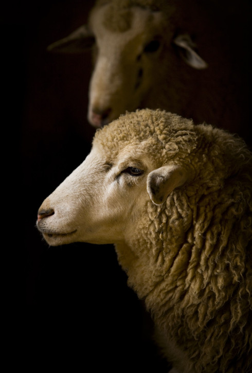
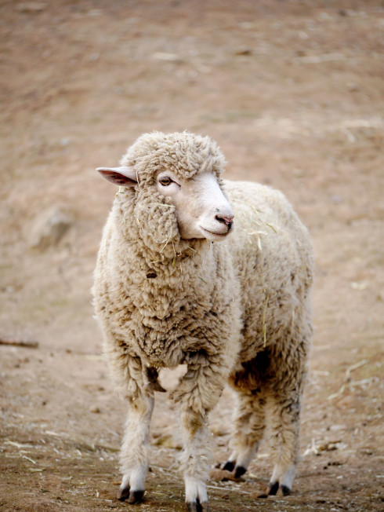

Ovis aries
da sub-família CaprinaeA ovelha (Ovis aries) é um mamífero ruminante bovídeo da sub-família Caprinae. O carneiro é o macho da ovelha e os juvenis são cordeiros, anhos ou borregos. É um animal de enorme importância econômica como fonte de carne, laticínios, lã e couro.
Ambos os sexos têm chifres, apesar do tamanho e formato ser variável.
Criada em cativeiro em todos os continentes, a ovelha foi domesticada na Idade do Bronze a partir do Urial (Ovis orientalis), que vive actualmente nas montanhas da Turquia e Iraque, ou de outras espécies da ovinos da região. As ovelhas são, quase sempre, criadas em rebanhos. O manejo requer cuidados, seja pelo fato de se tratar de um rebanho grande, ou por serem animais sensíveis.
Além do frio, os criadores devem atentar para raposas, lobos e outros predadores, que cercam as fêmeas e roubam-lhes os filhotes. A lã, retirada no início do verão, importante fonte de renda para o criador, torna a crescer, garantindo ao animal a sua própria defesa ao frio.
"No fim das contas, a lã de uma ovelha negra é igualmente quente.”
- Estado de conservação: Não avaliada (domesticado)
- Ordem: Artiodactyla
- Gênero: Ovis
- Idade média: 11 anos
- Macho adulto: 100kg
- Fêmea adulta: 80kg
As ovelhas domésticas são descendentes do muflão-asiático, que é encontrado nas montanhas da Turquia ao Irã meridional. Evidências da domesticação datam de 9000 a.C. no que é hoje o Iraque.
Evidências das primeiras domesticações são encontradas em PPNB Jericho e Zawi Chemi Shanidar. As ovelhas de lã enrolada são encontradas somente desde a Idade do Bronze. O muflão-europeu (Ovis musimon) encontrado na Córsega e na Sardenha assim como em Creta e a extinta ovelha-selvagem-do-Chipre são possíveis descendentes das primeiras ovelhas domésticas que se tornaram selvagens.